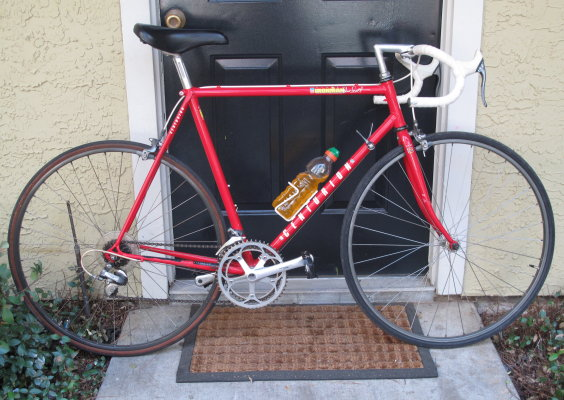
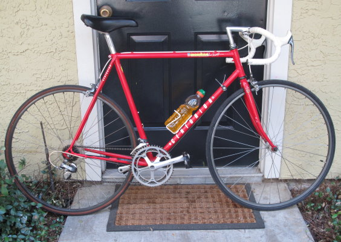

The Master designation was added in 1987 and carried on through the final year of the ironmans in 1989. This differentiated it from the new Ironman Expert that was also introduced in 1987. While the Master kept the 600 grouppo as the previously model Ironman, the Expert had the new 105 Grouppo. The Frames were similar to the expert, Same geometery and tubing (Tange #1) But there was differences in the Lugs that were used on the Master as compared to the Expert but for the most part the main difference was the color and the Master had a crowned fork, unlike the Expert which had a unicrown.
1987, Had shimano 600 SIS (6200 Series) like the 1986 Model Ironman. and featured the std two tone paint that had been available on Centurions since 1986. with the secondary color on the Headtube and the Seattube.
1988, Saw numerous changes the Master now included the new Shimano 7 speed 600 Ultegra grouppo.(6400 Series) and the paint scheme changed to either a fade or a marble/smoke effect with the secondary color on the Headtube/Fork and SeatStay/Chain Stay
1989, Kept the Shimano 600 Ultegra (6400 Series) and retained a marbe paint fade along with a solid color paint scheme Guards Red.?
1988 & 1989 were spec'd the same except for paint, saddle (1988 - Selle italia, 1989 - Avenir) and pedals (1988 - Shimano 600, 1989 - Sampson).


1987 Centurion Ironman Master Marine Green/White (source: fleslider)
| Frame | Tange #1 |
| Fork | Tange sloped crown (TIG-welded) |
| General Groupset Notes | Shimano 600EX Anodizing:(* bronze) (#dark grey) |
| BB | Sugino |
| Crank | *Shimano 600 (FC-6207) bio-pace 53-42T |
| Gears | Shimano 600 (MF-6208) UG 13-14-15-17-19-21T 6 speed freewheel |
| Shifters | Shimano 600 (SL-6208) SIS |
| F-Derailleur | Shimano 600 (FD-6207) 28.6 clamp |
| R-Derailleur | Shimano 600 (RD-6208) SIS short cage |
| Pedals | Shimano 600 (PD-6207) toe clips |
| Brakes | *Shimano 600 (BR-6208) |
| Brake Levers | *Shimano 600 (BL-6209) aero |
| Bars | Nitto B115 390 <=54cm 420 >=56cm |
| Stem | Nitto |
| Headset | Shimano 600 (HP-6207) star nut |
| Seatpost | Sugino SP-KCL graduated scale 27.0 |
| Saddle | Selle Italia Turbo |
| Hubs | Shimano 600 (HB-6207) 32f/32r except 62/64cm frames = 36f/36r |
| Rims | #Wolber Super Champion Alpine |
| Tires | Panaracer Technova II |
| Scheme | Contrasting headtube & seatube |
| Head Badge | Heavy "C" w/o shading |
| DT Decal | "Centurion" unshaded thinner font, more graduated thickness |
| TT Decal | "Ironman Master Dave Scott" |
| Seattube Decal | Top: Blue "Tange 1" Base: "Quality from Japan/Designed in USA" |
| Seat Stay Decal | "Centurion" below caps |
| Fork Decals | Fork Blade: Red "Tange" Crown: "Centurion" |
| Color #1 | Marine Green/White |
| Color #2 | Yellow/ White |
| MSRP: | $650.00 (1987) |


1988 Ironman Master Purple Smoke /White (source:fleslider)

1988 Ironman Master Yellow/White (source:nesposito)
| Frame | Tange 1 |
| Fork | Tange unicrown |
| General Groupset Notes | Shimano 600 Ultegra (6400 (Tricolor) |
| BB | Tange |
| Crank | Shimano 600 Ultegra (FC-6400) bio-pace 53-42T |
| Gears | Shimano 600 Ultegra UG 13-14-15-17-19-21-24T (CS-6400) 7 speed cassette |
| Shifters | Shimano 600 Ultegra (SL-6400) SIS |
| F-Derailleur | Shimano 600 Ultegra (FD-6400) 28.6 clamp |
| R-Derailleur | Shimano 600 Ultegra (RD-6400) SIS short cage |
| Pedals | Shimano 600 Ultegra (PD-6400) toe clips |
| Brakes | Shimano 600 Ultegra (BR-6400) |
| Brake Levers | Shimano 600 Ultegra (BL-6401) aero SLR |
| Bars | Nitto B115 390 <=54cm 420 >=56cm |
| Stem | Nitto |
| Headset | Shimano 600 Ultegra (HP-6400) |
| Seatpost | Sugino non-fluted 27.0 |
| Saddle | Selle Italia Turbo |
| Hubs | Shimano 600 Ultegra (F:HB-6400 R:FH-6400) 28f/32r except 60-64cm frames = 32f/32r |
| Rims | Araya CTL-370 |
| Tires | Panaracer Technova II |
| Scheme | fade (primary color in the center fading to secondary color at the HeadTube and Fork on the front and Chainstay and Seatstay at the back.) |
| Head Badge | Heavy "C" w/o shading "Made in Japan" below |
| DT Decal | "Centurion" unshaded thinner font, more graduated thickness |
| TT Decal | "Ironman Master Dave Scott" |
| Seattube Decal | Top: Clear "Tange 1" Base: "Made in Japan/Designed in USA" |
| Seat Stay Decal | Geometric Shapes & Squiggles |
| Fork Decals | Clear Tange |
| Color #1 | Purple Smoke Fade |
| Color #2 | Yellow/White Fade |
 

1989 Ironman Master Red (Source Craigslist)

1989 Ironman Master White/Gray Granite (Source Unknown)

1989 Ironman Master Blue Water (Source:JimDandy)
1989 continued the fades and Introduced solids. From an 1989 Advertisement, "This new Centurion is our most aggresive frame geometry ever. Short chainstays, a proportionally longer top tube, steep 74 1/2 degree head angle on the mid and large sizesand a geometrically matched fork rake combine in a competition-ready package.
| Frame | Tange Champion #1 |
| Fork | Tange Champion #1 Unicrown (TIG-welded) |
| General Groupset Notes | Shimano 600 Ultegra (Tricolor) |
| BB | ? |
| Crank | Shimano 600 Ultegra (FC-6400) bio-pace 52-42T |
| Gears | Shimano 600 Ultegra UG 13-14-15-17-19-21-24T (CS-6400) 7 speed cassette |
| Shifters | Shimano 600 Ultegra (SL-6400) 7 Speed SIS |
| F-Derailleur | Shimano 600 Ultegra (FD-6400) 28.6 clamp |
| R-Derailleur | Shimano 600 Ultegra (RD-6400) SIS short cage |
| Pedals | Sampson/SR Clipless |
| Brakes | Shimano 600 Ultegra SIS single pivot calipers (BR-6400) |
| Brake Levers | Shimano 600 Ultegra (BL-6401) aero SLR |
| Bars | SR? |
| Stem | Nitto |
| Headset | Tange Levin CD |
| Seatpost | SR Laprade fluted 27.2 |
| Saddle | Avenir Turbogel |
| Hubs | Shimano 600 Ultegra HB-6400, FH-6400 back:32h, Front:28h (32h Front 58cm frame and larger) |
| Rims | Araya CTL-370 700c Dark Anodized, back:32h, Front:28h (32h Front 58cm frame and larger) |
| Tires | Panaracer Technova II 700c |
| Scheme | solid or fade |
| Head Badge | Heavy "C" w/o shading "Made in Japan" below |
| DT Decal | "Centurion" unshaded thinner font |
| TT Decal | "Ironman Master Dave Scott" |
| Seattube Decal | Top: geographic themed "Tange #1" Base: "Made in Japan/Designed in USA" |
| Seat Stay Decal | "Centurion" below caps |
| Fork Decals | Clear "Tange" |
| Color #1 | Guards Red |
| Color #2 | Grey Marble / White Dualtone |
| Color #3 | Blue Marble / White Dualtone |
2020 Vintage-Centurion.com